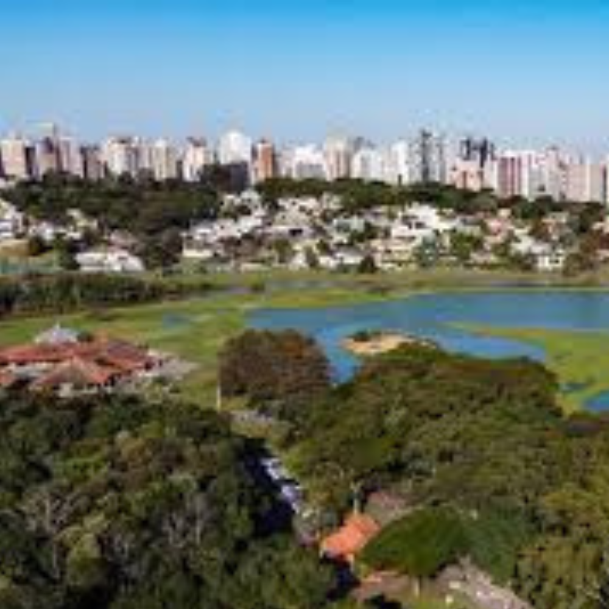

O Paraná é um dos estados mais importantes da região Sul do Brasil, conhecido por sua diversidade cultural, desenvolvimento econômico e belas paisagens naturais. Sua capital é Curitiba, uma cidade reconhecida internacionalmente pelo planejamento urbano, qualidade de vida e preocupação com o meio ambiente. O estado possui uma economia forte, baseada na agricultura, indústria e comércio. O Paraná é um grande produtor de soja, milho, trigo e café, além de ter destaque na criação de aves e suínos. A indústria também é bastante desenvolvida, especialmente nos setores automobilístico, alimentício e tecnológico.

Voltar